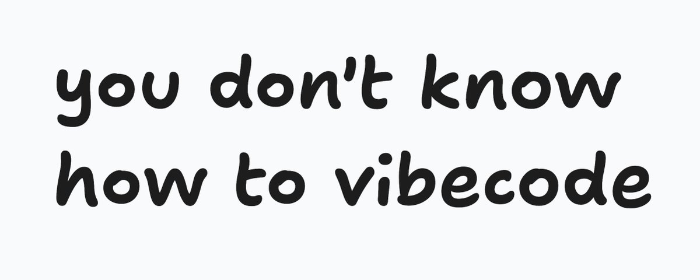
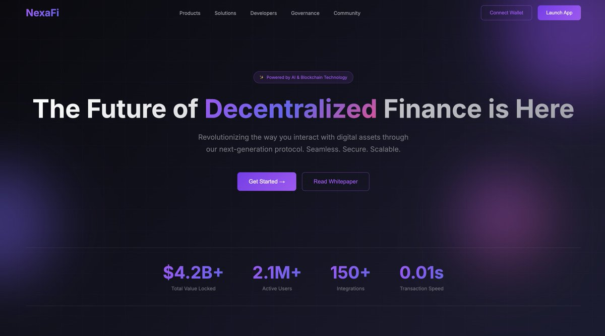
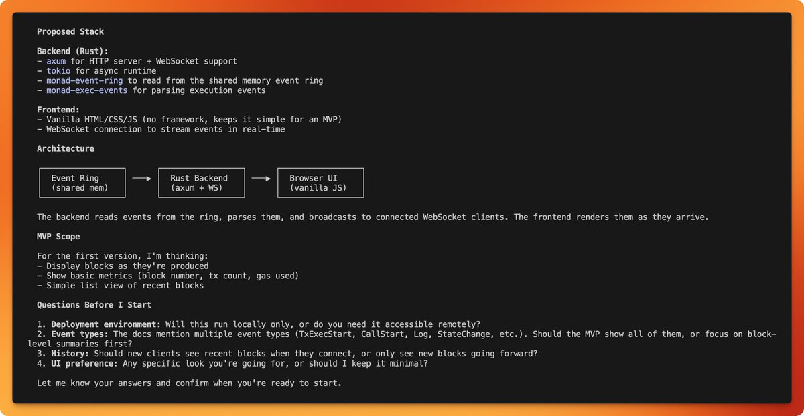
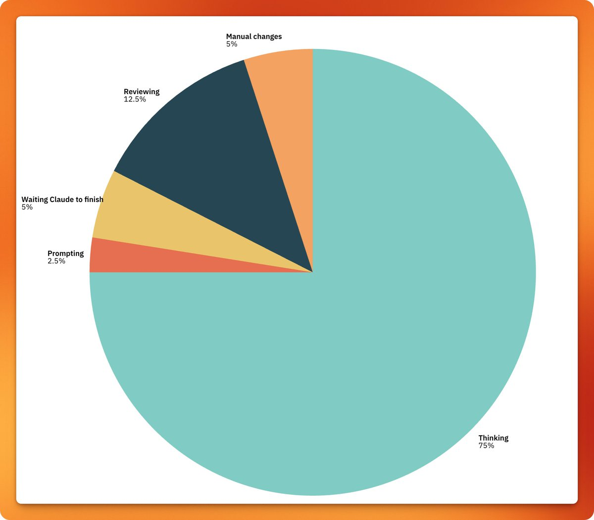
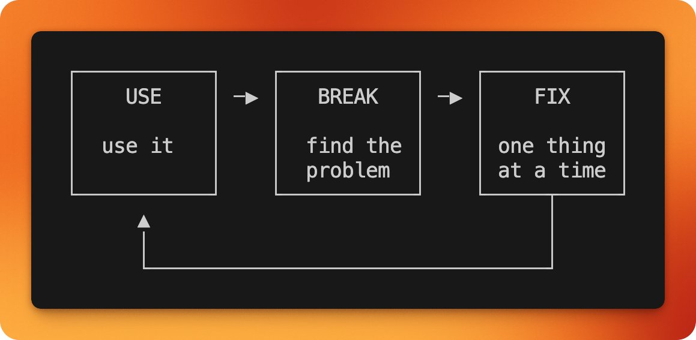
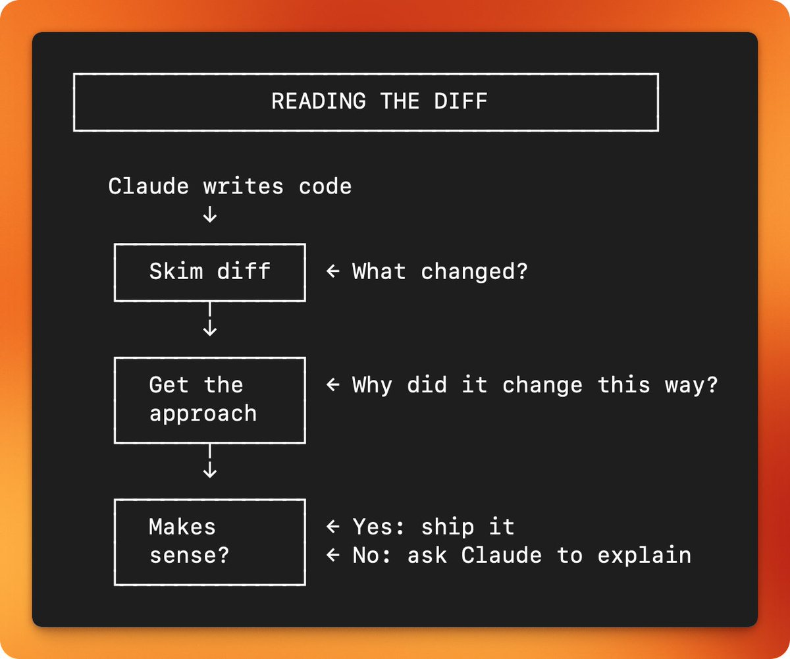

You don't know how to vibe-code

It's 2026. We have AGI (or at least the ability to code almost anything thanks to models like Opus 4.5 from Anthropic and GPT 5.2 from OpenAI).
But there's one problem. What you create in minutes creates problems you spend hours trying to fix. And if you're unlucky, you end up with a spaghetti codebase that no LLM can untangle. You no longer understand the code. It doesn't even make sense to read it anymore.
So, what are you doing wrong and what could you do better, and how do some people get everything right when they are vibe-coding?
Honestly, vibe coding kinda gave people the wrong impression on using LLMs to write code. Somehow everyone ended up thinking "yeah i can do this with ONE PROMPT, without EVER LOOKING AT THE CODE".
That just won't work, unless you consider this good work:

And the code behind it is even worse. The AI's knowledge is months old, maybe a year. It doesn't know your codebase. It doesn't know what "done" means.
Alright, here's how I actually vibe-code. Or rather, how I use my current favorite tool (claude code) to build real projects.
I'm going to walk you through how I built execevents.xyz, a real-time execution visualizer for Monad. Blocks race across the screen as they go through consensus. Transactions stream in live. You can see state changes, call traces, gas usage.
This isn't a toy project. Under the hood, execevents connects to Monad's Execution Events API—a Rust service that reads blockchain data directly from shared memory, HFT-style. We're talking sub-millisecond latency for real-time block and transaction data. Building something that interfaces with infrastructure this performant would normally require deep systems knowledge.
But here's the thing: I built this in HOURS, not days, not weeks. Using Claude Code and the methodology below, anyone can build high-performance applications on Monad without being a systems engineer or even a regular developer.
Below I explain my methodology about vibe-coding, or how I code.
Step 1: Think about the end goal
Visualize the most basic version of what you want to build. I usually ask claude something like this:
I read about execution events from Monad docs and I want to build an app showing how to use them. Here is the page about execution events: (i paste the markdown here) Do not start building until I confirm. Tell me how you are planning to build this. Then ask me to confirm. Also, ask me any questions you have. Our first goal is to reach to a basic MVP.

Above is the answer I got from claude. Notice how it basically told me what it's going to be doing exactly. I can now visualize what I am gonna be getting and can direct the project better. This is the point where I want to stop and think. If everything looks OK. I move on to the questions claude asks. Then, I start answering them.
Much like real coding, you want to spend time thinking about the code rather than writing it.

You might do several iterations before even you tell claude to build. I usually ask it to not to build in every message until I like the implementation plan.
I also use the plan mode a lot. It is the new way of telling the claude to ask you questions, and it just works really well!
Step 2: Build the MVP, then use it
Then, ask claude to start building. When it finishes doing stuff, test it. This is the part people LOVE skipping, not knowing that the problems that arise later actually stem from it. After it fixes the issue, go back and find another problem to fix, do this until there are no issues left.

Step 3: Iterate with small, focused prompts
This is where most people mess up. They find five things wrong and try to fix them all in one massive prompt.
Don't do that.
Every time you find something broken, fix just that one thing. Here's what my prompts actually looked like:
Prompt 1: "The TPS calculation is wrong. It's counting blocks that arrive in batches over WebSocket. Make it only count consecutive block numbers."
Prompt 2: "This doesn't work on mobile. Add a responsive layout with a bottom sheet for block details."
Prompt 3: "The block state transitions are too abrupt. Add CSS transitions so blocks slide smoothly between states."
Each prompt is:
- Specific -> I'm telling it exactly what's wrong
- Small -> targeting one thing
- Reviewable -> I can read the diff and understand what changed
Step 4: Read the Code
Or at least, take a quick glance at it. Every time Claude makes a change, I read the diff. Not because I don't trust it, but because I need to understand what I'm shipping.

Reading doesn't mean auditing every line. It usually means:
- Skimming the diff
- Understanding the approach
- Asking yourself "does this make sense?"
By reading the code, you will catch mistakes, learn, and stay in control. The moment you stop understanding your codebase is the moment you can't fix it anymore. Do not turn your project into a mess you can't make sense of.
And if you don't understand anything in the code, you can open a new terminal window and ask claude code to explain it for you.
What I Learned
Building execevents taught me things I wouldn't have learned from tutorials.
On the systems side: I now understand how Monad's Execution Events work at a low level, how the Rust API pulls data from shared memory, why certain event types arrive in batches, and how to handle the timing edge cases that come with real-time blockchain data. Claude didn't just write code; it explained the architecture as we built it. When the TPS calculation was wrong, debugging it meant understanding WebSocket message ordering and block finality.
On the vibe-coding side: I learned that the quality of your output directly reflects the quality of your iteration loop. The people who fail at vibe-coding aren't bad at prompting, they're bad at testing and reading diffs. They skip the boring parts.
The real unlock is this: with the right methodology, AI tools let you punch above your weight. You can build performant, production-grade applications that interface with serious infrastructure, even if you've never written Rust or worked with shared memory systems. The barrier isn't coding ability anymore. It's knowing how to guide the process.
Now, go.
And do magic, for we live in a magical era.